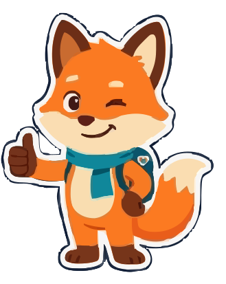

Bienvenida
01_saludo

Zorrito Saludo
Pose amistosa de bienvenida levantando la pata, ideal para la pantalla de inicio, landing y login.
Vectorial Escala Libre
Descargar .SVG
Personaje oficial generado y vectorizado en formato dual: SVG vectorial escalable para nitidez infinita y PNG transparente 32-bit. Listo para animaciones de interfaz, aciertos y tutoría pedagógica.
Pose amistosa de bienvenida levantando la pata, ideal para la pantalla de inicio, landing y login.

Manos al frente en postura descriptiva de señas con mirada atenta, perfecto para dar tips y retroalimentación.

Mano en la barbilla con bombilla turquesa de ideas encendida, óptimo para cuestionarios, onboarding y modo examen.

Gesto de pulgar arriba dando confianza al usuario, ideal para tarjetas de rachas diarias y subidas de nivel.

Saltando con manos en alto haciendo el aplauso sordo con confeti en colores Manitas cuando logras la seña correcta.
También tienes a disposición la imagen original en alta definición generada con las poses alineadas para edición manual o integración en atlas de sprites de videojuegos.